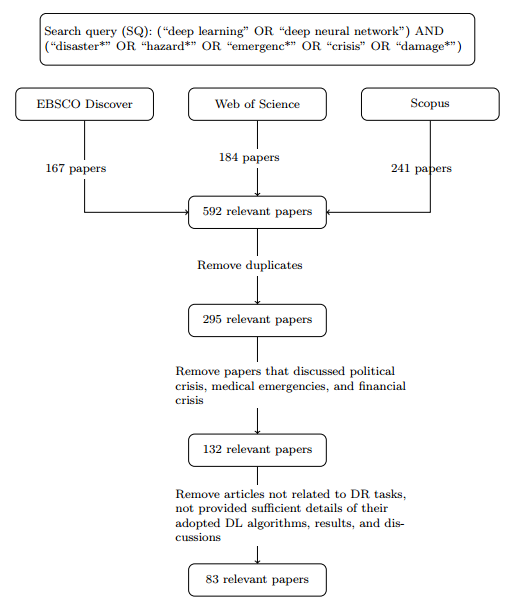

Traffic Flow Estimation based on Deep Learning for Emergency Traffic Management using CCTV Images
This paper discusses the research on deep learning approaches that have been used for disaster response tasks. The systematic review includes 83 articles, and our analysis is centred around the components of learning, a set of aspects that govern the application of machine learning for a given problem domain. We discuss successes, current and future challenges, and opportunities in using deep learning for DR tasks. Finally, a flowchart and guidance for future research are developed as an outcome of the analysis to ensure the benefits of deep learning for disaster response activities are utilized.
More details of this study can be found through the following paper and link:
Algiriyage, N., Prasanna, R., Stock, K. et al. Multi-source Multimodal Data and Deep Learning for Disaster Response: A Systematic Review. SN COMPUT. SCI. 3, 92 (2022). https://doi.org/10.1007/s42979-021-00971-4 Link to paper